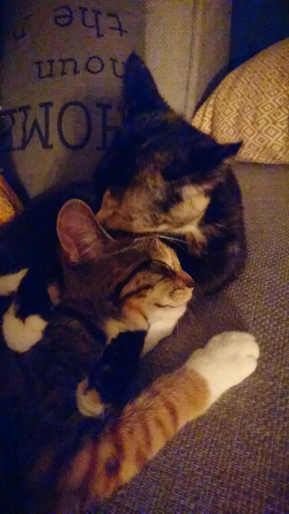
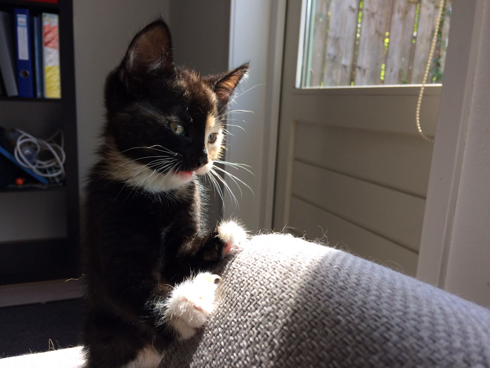
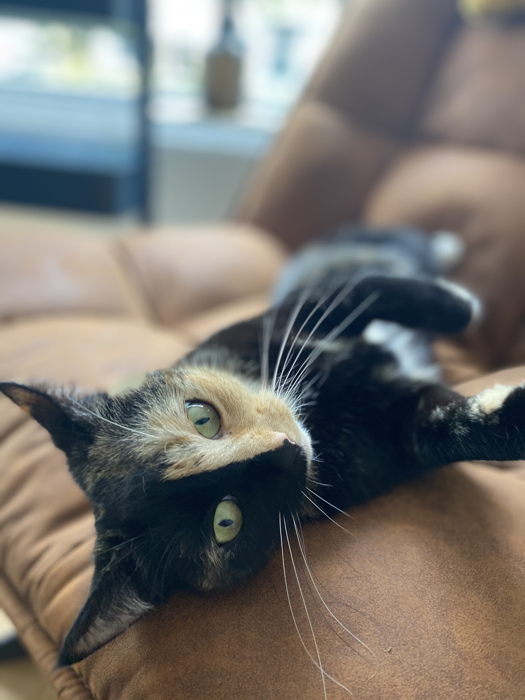

Over mij
Mijn naam is Nox. Ik ben geboren in een dorpje in Noord-Holland.
Mijn baasjes Joep en Sanne hebben mij gehaald samen met mijn stiefzus Lumos.
Lumos is helaas overleden en ik ben nu dus alleen over.
Ik ben niet echt een raskat, al gedraag ik me soms wel zo. Je zou mij gewoon huiskat kunnen noemen.
Dat is trouwens ook waar ik het liefste ben, in huis.
Buiten kom ik af en toe wel hoor! Even een frisse neus halen, maar daarna weer snel naar binnen.

Wat ik het liefste doe? Dat is toch wel naar buiten kijken. We zijn vorig jaar ben ik met mijn baasjes
verhuist.
We hebben nu een prachtig huis met een erker aan de voorkant. Dit is toch wel waar ik het meeste van
geniet.
Ik zit het liefst de hele dag voor het raam. Buiten vliegen vogels, lopen andere katten en honden.
Allemaal natuurlijk super interessant om te bekijken.
Ik zei het net al even, maar buiten kom ik dus altijd maar heel even. Ik ga ook het liefst niet te
verweg.
De tuin van de buren is af en toe al een avontuur. Die vogels en andere katten die ik door de erker kan
zien,
zie ik nooit in het echt. Veel te ver. Jagen vindt ik eigenlijk ook een beetje spannend. Ik doe het wel
hoor!
Maar eigenlijk nooit met succes. Laatst was er een kikker in de tuin, dat vond ik wel grappig. Maar echt
aanvallen, nee dat is zielig!

Mijn baasjes zijn Joep en Sanne. Joep is erg lang. Dit vind ik echt een uitkomst.
Als hij mij optilt en voor het raam gaat staan kan ik alles zien.
Het liefst doen we dit samen de hele dag.
Sanne ligt altijd onder een dekentje op de bank. Ik geloof dat ze het snel koud heeft.
Gelukkig is dat dekentje lekker zacht waardoor ik een heerlijk plekje heb als ik bij haar ga liggen.
Je hoorde het misschien al aan de naam van mij en mijn stiefzus: 'Nox en Lumos' maar mijn baasjes zijn
dus Harry Potter fan.
De boeken staan hier allemaal in de kast en de films worden grijs gedraaid. Ik zag laatst zelfs dat Joep
een toverstaf had besteld.
Nox is de toverspreuk om alles donker te maken, ik ben zelf bijna helemaal donker. Vandaar dat ik deze
naam heb gekregen.
